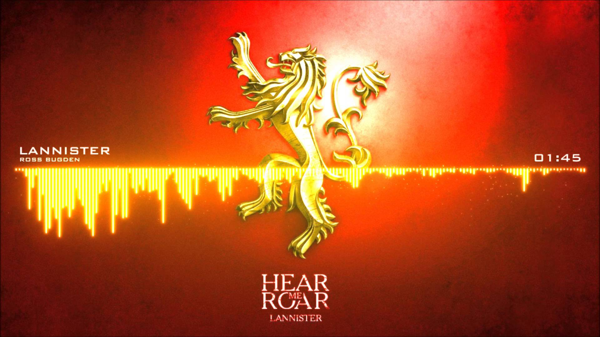

Ланнистеры с Утёса Кастерли - один из великих домов Вестероса, правящий на Западных землях. Это один из самых богатых и влиятельных домов, а также одна из старейших династий. Хотя главным девизом дома является фраза «Услышь мой рёв!», она редко упоминается. В основном, все знают поговорку: «Ланнистеры всегда платят свои долги». Их земли находятся в западной части континента, лорды дома занимают замок Утёс Кастерли, построенный на скалистом мысе. Глава дома носит титул верховного лорда Западных земель и хранителя запада. На данный момент являются правящей династией Семи Королевств.
Ланнистеры высоки, красивы и светловолосы, они ведут свою родословную от андалов, которые смогли уничтожить могущественное королевство в Западных землях, по мужской линии и от Ланна Умного, легендарного прохвоста и обманщика, который смог завладеть Утёсом Кастерли, по женской линии. Долгое время Ланнистеры правили Западными землями как Короли Скалы. Последним из этой королевской династии стал Лоран Ланнистер. Объединившись с Королём Простора Мерном Гарднером, он выставил против Эйгона Таргариена шестьдесят тысяч воинов, но потерпел поражение в битве, известной как Поле огня. С этого времени Ланнистеры служат королю на железном троне в качестве верховных лордов Западных земель и хранителей запада.
